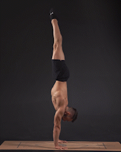
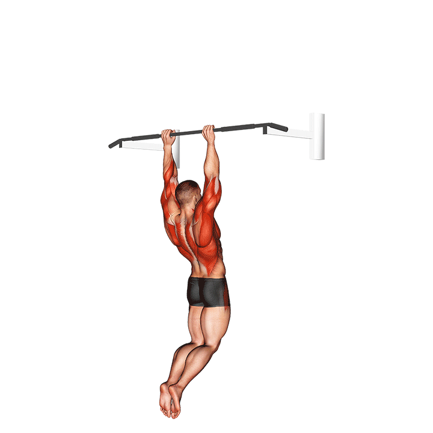

Os movimentos básicos são:
• L-Sit.
• Frog Stand.

• Hand stand (Parada de mão).
• Elbow Lever.
Movimentos Intermediários:
• V-Sit.
• Front Lever.

• Hand stand Push-ups (Fazer flexões estando na posição do Hand Stand).

• Muscle-ups (Elevar o corpo todo acima da barra).
